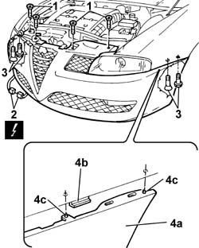
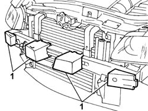

7210E10 R.R. FRONT BUMPER
- Path
- Procedures > 72 PANELS AND FRAME > 7210 REMOVING REFITTING > 7210E EXTERNAL PARTS > 7210E10 R.R. FRONT BUMPER
- Kind
- repair procedure (removal / refitting; the operation number is the code)
- Applies to
- all engines; all production periods
- Interactive page
- https://sloeber94.github.io/elrnDB-aGt/en/#/125002028
Applies to: all engines; all production periods
 Removing
Removing
 Refitting
RefittingOp. 4450B02 LEFT FRONT WHEEL R R
Op. 4450B04 RIGHT FRONT WHEEL R R
Op. 7055B54 UNDER-ENGINE GUARD - R R
Op. 7055B64 LH OR RH REFLECTOR(ONE) ON REAR BUMPERS - R R
Op. 7055B65 ENGINGE BAY DUSTGUARD PROTECTION IN LEFT FRONT WHEEL ARCH R R
Op. 7055B90 LEFT FRONT WHEEL ARCH LINER - R.R.
Op. 7055B91 RIGHT FRONT WHEEL ARCH LINER - R.R.
Lower the vehicle and open the bonnet lid.
1. Undo the upper central bumper bolts.
Raise the car.
2. Prise up from the retainer and disconnect the braid electrical connection from the front turn signals.
Name | Connector | |
|---|---|---|
2 | Direction indicators front couplnig | See D51 DIRECTION INDICATORS FRONT COUPLNIG ( CONNECTORS ) |
3. Working from both sides of the car, undo the bumper's side bolts.
4. Remove the bumper (4a) releasing it from the side retainers (4b) and releasing the centering pins (4c).

Applies to: all engines; all production periods
Lower the vehicle.
1. Prise out the buffers if necessary.

Applies to: all engines; all production periods
If necessary,
Applies to: all engines; all production periods
Refitting
RemovingCheck that the front bumpers are undamaged.
If carried out,
Op. 7205E10 STRIPPING FRONT BUMPER
Refit the buffers if they were removed.
Position the bumper attaching the side retainers and the centering pins.
Screw in the upper bumer bolts without tightening.
Tighten the side bolts checking the alignment of the bumper and the wing at the sides.
 | Fastening | Component | Ø | Value (daNm) |
|---|---|---|---|---|
- | Bolt | FRONT BUMPER | M6 | 08 |
Tighten the top central bumper retaining bolts.
| Fastening | Component | Ø | Value (daNm) |
|---|---|---|---|---|
- | Bolt | FRONT BUMPER | M6 | 08 |
Connect the electrical connections and fit to the retainer.
Op. 7055B91 RIGHT FRONT WHEEL ARCH LINER - R.R.
Op. 7055B90 LEFT FRONT WHEEL ARCH LINER - R.R.
Op. 7055B64 LH OR RH REFLECTOR(ONE) ON REAR BUMPERS - R R
Op. 7055B65 ENGINGE BAY DUSTGUARD PROTECTION IN LEFT FRONT WHEEL ARCH R R
Op. 7055B54 UNDER-ENGINE GUARD - R R
Topics linked from this page (8)
- 4450B02 LEFT FRONT WHEEL R R
- 4450B04 RIGHT FRONT WHEEL R R
- 7055B54 UNDER-ENGINE GUARD - R R
- 7055B64 LH OR RH REFLECTOR(ONE) ON REAR BUMPERS - R R
- 7055B65 ENGINGE BAY DUSTGUARD PROTECTION IN LEFT FRONT WHEEL ARCH R R
- 7055B90 LEFT FRONT WHEEL ARCH LINER - R.R.
- 7055B91 RIGHT FRONT WHEEL ARCH LINER - R.R.
- 7205E10 STRIPPING FRONT BUMPER
Topics that link to this page (42)
- 1004B10 POWER UNIT WITH MANUAL GEARBOX - R + R
- 1016D20 LEFT CYLINDER HEAD – R.R. AND REPLACING GASKET
- 1016D24 RIGHT CYLINDER HEAD - R.R. AND GASKET REPLACING
- 1020D10 FRONT CRANK SHAFT OIL SEAL COVER - R + R AND REPLACE SEALS WITH TIMING BELT REMOVED
- 1020D15 FRONT CRANKSHAFT OIL SEAL COVER-R+R AND REPLACE SEALS FOR ENGINES WITH OIL PUMP ON CRANKSHAFT AND HEAT EXCHANGER
- 1020D38 FLYWHEEL SIDE OIL SEAL - REPLACE
- 1020D51 CRANK SHAFT REAR MOUNT - APPLY SILICONE TO MATING SURFACES
- 1024B10 ENGINE FLYWHEEL - R + R FOR VERSIONS WITH MANUAL GEARBOX
- 1048A23 COLD AIR INTAKE - R R
- 1048B48 HEAT EXCHANGER DUCT - R R
- 1048B50 TURBO CHARGER INTERCOOLER - R + R
- 1080B39 RIGHT CATALYTIC PRECONVERTER R R OR REPLACE CYLINDER HEAD GASKET
- 1084B34 CARTRIDGE ENGINE OIL FILTER SUPPORT - R + R
- 1084C34 ENGINE OIL COOLING RADIATOR - R + R
- 1084C36 ENGINE OIL COOLING RADIATOR SUPPORT BRACKET - R + R
- 1084C40 CONVOGLIATORE ARIA PER RADIATORE RAFFREDDAMENTO OLIO MOTORE - S.R.
- 1088B20 ENGINE COOLING RADIATOR - R + R
- 1088E11 FANS WITH SINGLE ENGINE DUCT - R+R
- 1810A20 CLUTCH - R + R
- 1820A24 THRUST BEARING LINKAGE - R + R
- 2110A10 MANUAL GEARBOX AND DIFFERENTIAL - R + R
- 2110C22 GEAR INPUT SHAFT SEALS - R R
- 2710A35 INTERMEDIATE DRIVE SHAFT MOUNT - R R
- 3340B56 RIGID PIPE FROM HYDRAULIC CONTROL UNIT TO RIGHT FRONT BRAKE - R.R.
- 4130B49 RETURN PIPE FROM POWER STEERING CASE TO HEAT EXCHANGER PIPE R R
- 4130B52 HEAT EXCHANGER PIPE - R+R
- 4130B54 RETURN PIPE FROM HEAT EXCHANGER PIPE TO POWER STEERING FLUID RESEVIOR R R
- 4130B98 RADIATORE RAFFREDDAMENTO LIQUIDO SERVOSTERZO - S.R.
- 4130B99 RETURN PIPE FROM POWER STEERING CASE TO POWER STEERING FLUID RESEVIOR R R
- 5040A40 AIR CONDITIONER CONDENSER - R+R
- 5040A44 AIR CONDITIONER DEHYDRATING FILTER/ACCUMULATOR - R+R
- 5040A50 PIPE FROM COMPRESSOR TO AIR CONDITIONER CONDENSER - R+R
- 5040A60 PIPE FROM CONDENSER TO EVAPORATOR (EXPANSION PIPE) - R+R
- 5040A64 PIPE FROM EVAPORATOR TO DEHYDRATING FILTER/ACCUMULATOR - R+R
- 5040A73 COMPRESSOR INLET PIPE - R R
- 5040A76 TANDEM PIPE FOR DELIVERY AND RETURN FROM EVAPORATOR RR
- 5040B14 AIR CONDITIONER SYSTEM MULTI-LEVEL PRESSURE SWITCH - R+R
- 5050D08 HEADLAMP WASHER JET/S - R R
- 5050D13 HEADLAMP WASHER SYSTEM TYPES AND FITTINGS - R R
- 5505C02 WIRING INCORPORATED IN FRONT BUMPER RR
- 5505C28 INTERGRATED ENGINE BAY AND ABS SYSTEM WIRING - R R
- 5530A10 ALTERNATOR - R+R